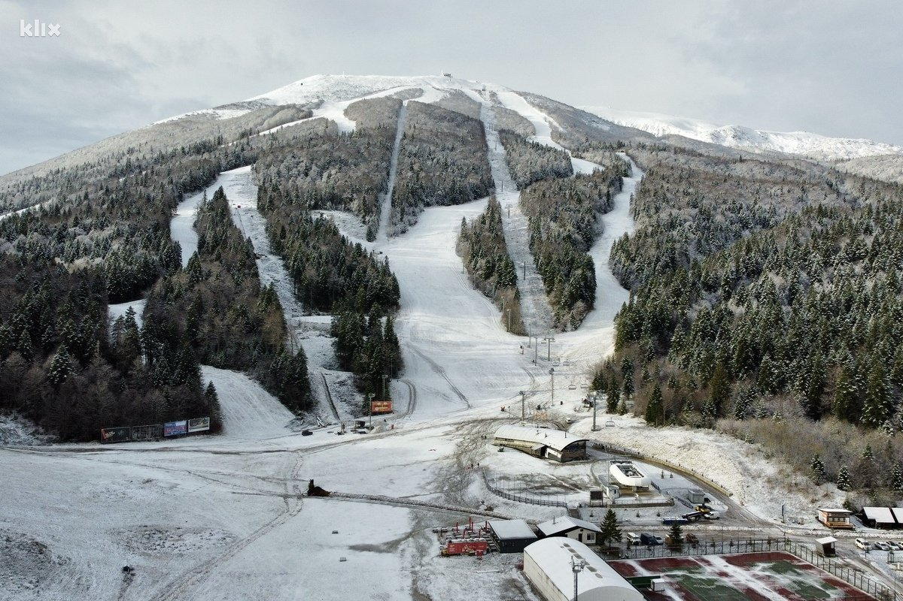
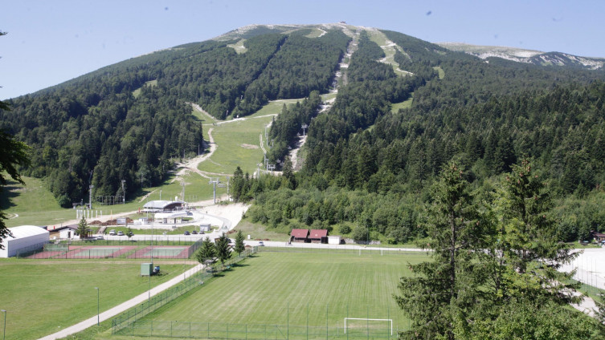
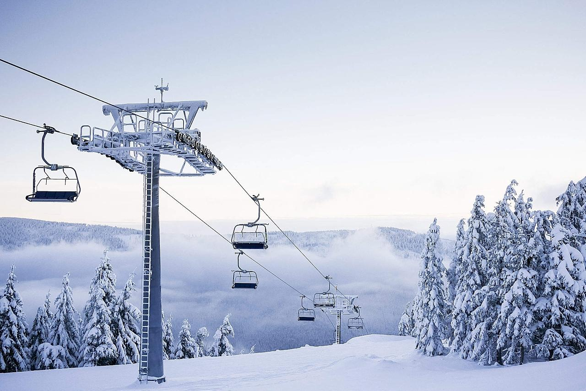
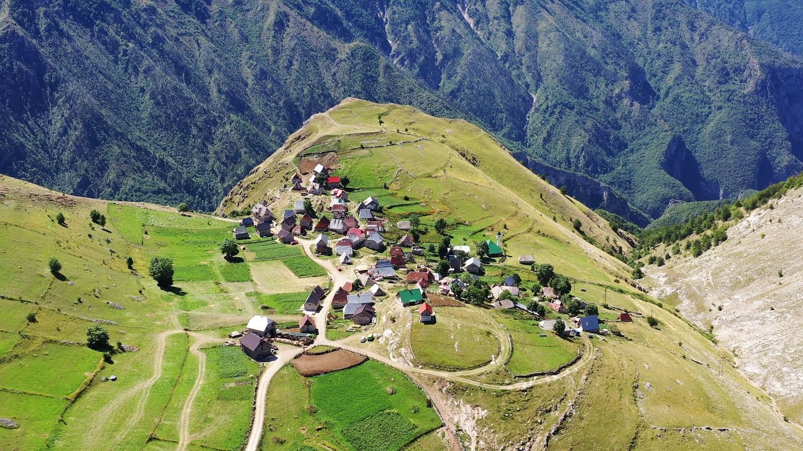

Samo 25 kilometara jugozapadno od Sarajeva nalazi se prirodni rezervat planine Bjelašnice na kojoj je održan veći dio takmičenja 14. zimskih Olimpijskih igara u alpskim i nordijskim disciplinama i skokovima. Bjelašnica je također, poznata kao planina na kojoj se dnevno znaju izmijeniti sva četiri godišnja doba.
Kako je sav ovaj prostor obrastao gustom šumom s mnogobrojnim životinjskim vrstama, ova planina je omiljeno mjesto za lov, ali i alpinizam, paraglajding, jahanje, planinarenje, planinski biciklizam, vožnju planinskim četverotočkašima.
 Sa više od 200 snježnih dana u godini, 135 cm debelim snježnim pokrivačem i dobro uređenim stazama dužine preko dvadeset kilometara, Bjelašnica i Igman predstavljaju savršeno mjesto za aktivan zimski odmor i rekreaciju, s dobrom hotelskom i drugom infrastrukturom. Ski staze se spuštaju s vrha Bjelašnice do Babinog dola, mjesta na kojem se nalazio cilj olimpijskog spusta.
Selo Umoljani, na planini Bjelašnica, odlično je polazište za nekoliko odličnih planinarskih ruta, uključujući i one prema Lukomiru,te kanjonu Rakitnice. Selo Lukomir, poznato po autohtonom načinu života njegovih stanovnika, organskoj hrani i tradicionalnoj arhitekturi, smješteno je na visini od 1.469 metara, što ga čini naseljem na najvišoj nadmorskoj visini u BiH.